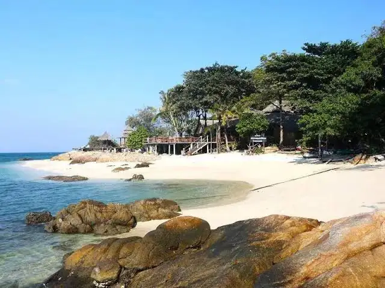

Дни выездаЕжедневно
Время08:00–16:00
Возраст / рост ребёнка90-120 см
ФорматОдин день
О программе
Охраняемый пляж в Саттахипе. Чистое море, замечательная альтернатива острову Ко Лан (никуда не плыть, только переезд около 30-40 минут). Включены: трансфер в обе стороны, билет на пляж. На пляже имеются бары и кафе.
Что важно знать
- Уточните точное место и время встречи у менеджера после подтверждения заявки.
- Детские цены действуют для указанного возраста или роста; дети младше — по запросу.
- Берите документы, воду, головной убор, солнцезащитный крем и удобную обувь. Для храмов — закрытые плечи и колени.
- Программа может корректироваться из-за погоды, закрытия объектов или праздников — менеджер предупредит заранее.